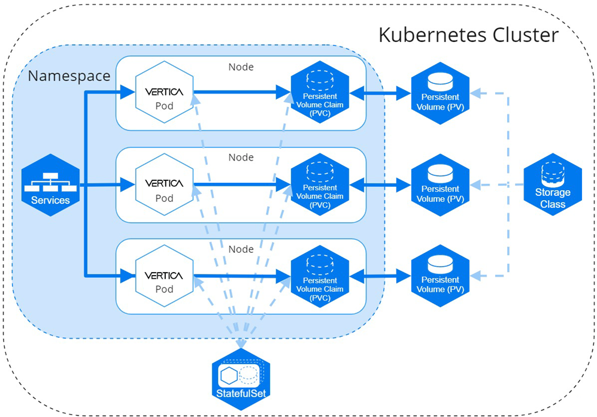

Micro Focus
Systems Software Engineer Co-Op
Sep 2020 – May 2021
I participated in a Co-op at Micro Focus as a systems software engineer working on the Veritca Anaylics Platform team. The Vertica Analytics Platform is a multinode database which is used by many technology companies. I worked on two large projects during my time at Micro Focus, the projects are detailed below.
Database Kubernetes Orchestration
Containerized environments allow the user to deploy their system from any machine using memory storage in a hosted machine. I was tasked with turning the Vertica database into a docker image and then orchastrating a multinode containerized database through Kubernetes. This project was extremely interesting for me as I had never worked with Docker or Kubernetes before and over the course of 3 months I was able to learn a lot and create a viable product that is used by Vertica clients still today. The hardest part of the project was the Kubernetes orchestration as since the Vertica database is already multinoded there was a lot of work that needed to be done in manipulating the IP-addresses of nodes that were dieing and being recreated. Below is an image of how the containerized environment I created is orchastrated.
Geospatial Library Update
Geospatial libraries allow computing systems to work with and understand different types of geometries. When starting my project the Vertica database ran with GEOS-2.8.1 which was released in 2015. I was tasked with upgrading the database to work with GEOS-3.8.1, the most recent version during the time of my Co-op. This project involved a lot of C programming which I really enjoyed as it gave me the opportunity to improve my low-level programming skills.